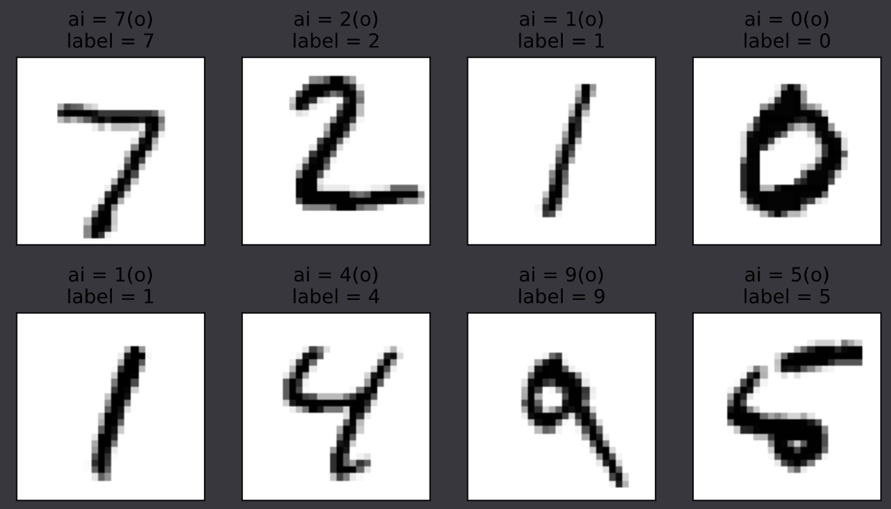
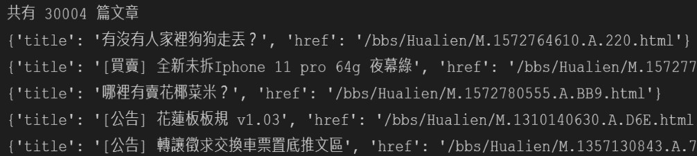
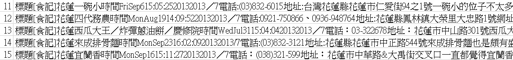
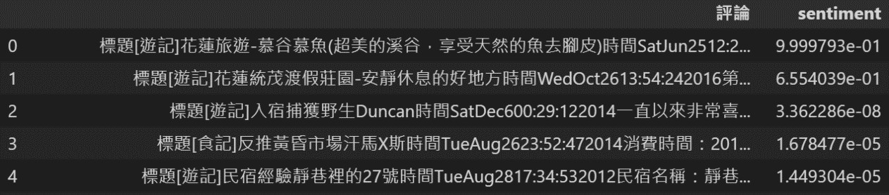
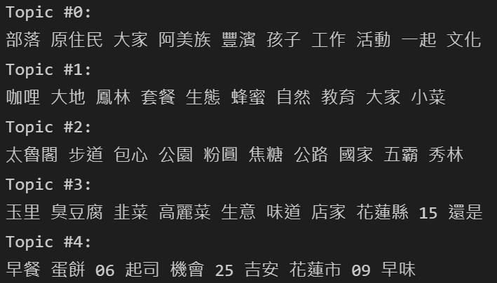
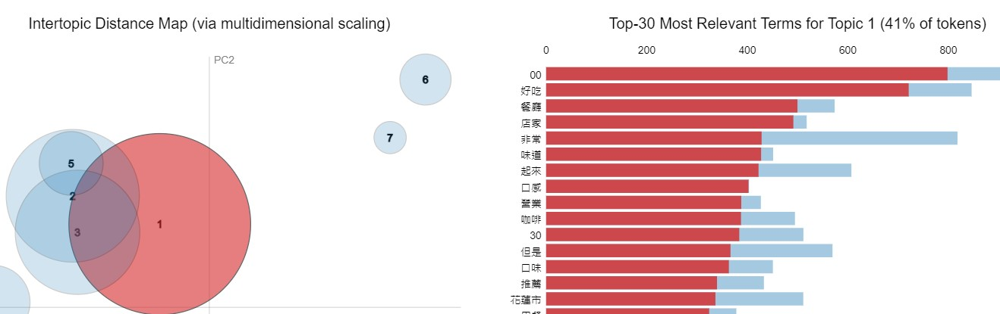
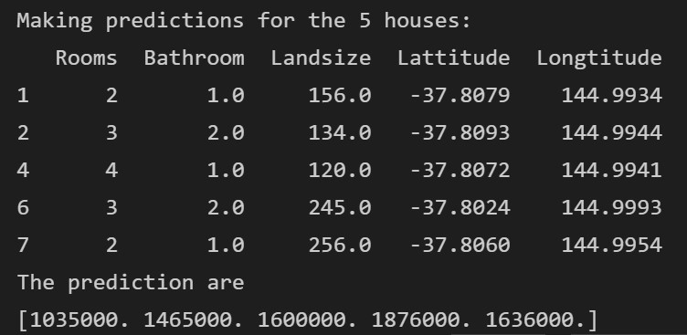
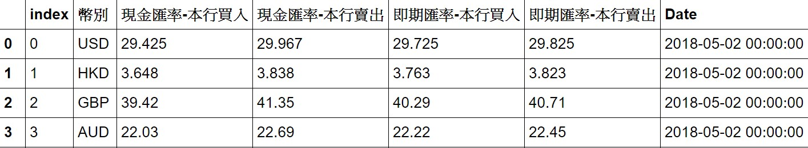
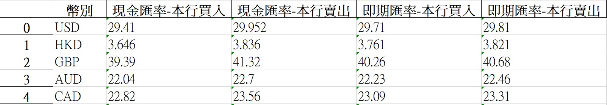
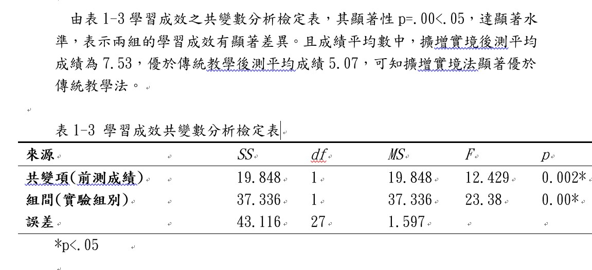

| Github連結 | HTML-CSS-Web-programming-practice |
|---|
| 預測結果截圖 |  |
|---|---|
| Github連結 | handwriting_recognition_practice |
| 網路爬蟲執行結果截圖 |  |
|---|---|
| 擷取下來的文章截圖 |  |
| 情緒分析執行結果截圖(結果在0-10之間，越接近10情緒越正面，越接近0情緒越負面。) |  |
| LDA主題分析文字結果截圖 |  |
| LDA主題分析資料視覺化截圖(圓圈代表不同主題，圓圈大小代表每個主題包含文章的數量。右側列出頻率最高的30關鍵字列表。) |  |
| Github連結 | Social_media_analysis |
| 預測結果截圖 |  |
|---|---|
| Github連結 | Housing_Prices_prediction |
| Pandas DataFrame結果截圖 |  |
|---|---|
| EXCEL截圖 |  |
| Github連結 | Crawling-rate-of-exchange-and-saving-in-sqlite |
| 分析結果截圖 |  |
|---|